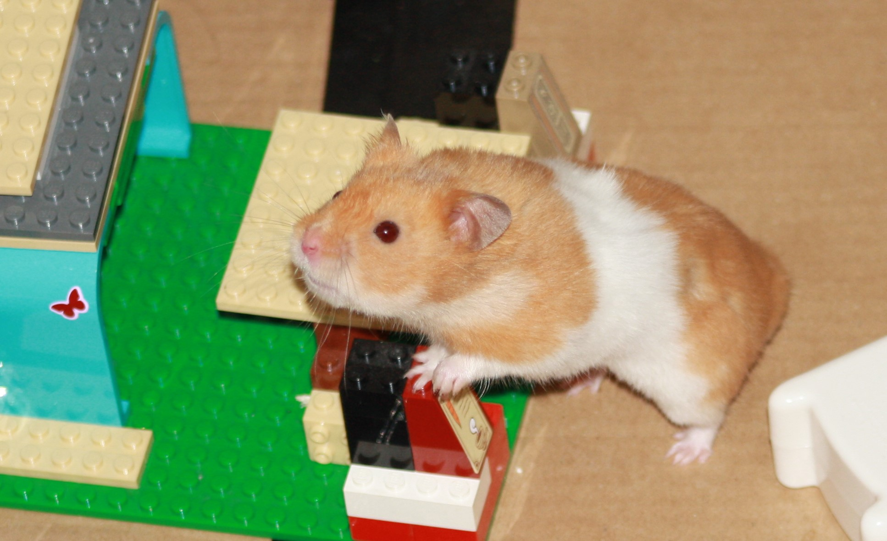

20-Jun-2017 | Milku
using bananas...
My humans need all the help they can get to make themselves presentable...unlike me. So on Day 20 of 30 Days Wild they've turned to nature to enhance their beauty regime.
The biggest human hasn't been scoffing as many bananas as he used to and that's left one looking a little riper than I'd want to get my teeth around. But there was hope for that over-ripe fruit. The rest of the family had read that the fruit acids in bananas can benefit dry skin.
The banana was quickly mashed. Now it should have had some yogurt added. Usually, they make their own yogurt, but haven't managed to get into the routine again after the recent school holidays. They didn't think that a tube of strawberry-flavoured fromage frais would be a reasonable substitute for natural yogurt so they just applied mashed banana to my favourite little human's face. And, because they could rather than because of any real beauty requirements, they placed some slices of cucumber over her eyes.
I heard the squeals from my cage...the banana was cold...it was slipping down her neck or into her ears... I was glad they hadn't wanted to get me involved. The recommended time for someone to keep the face mask on is 15 minutes. The little human lasted 5 minutes, but still thought she'd got some benefits from the experience.
They're contemplating doing something to make hair beautiful later. I'll be digging myself deeper into my den!
